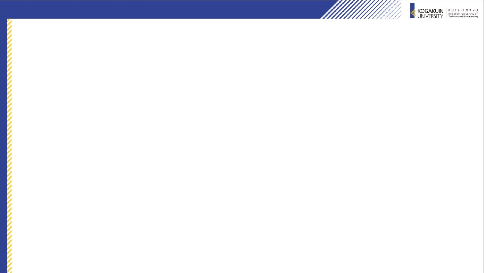
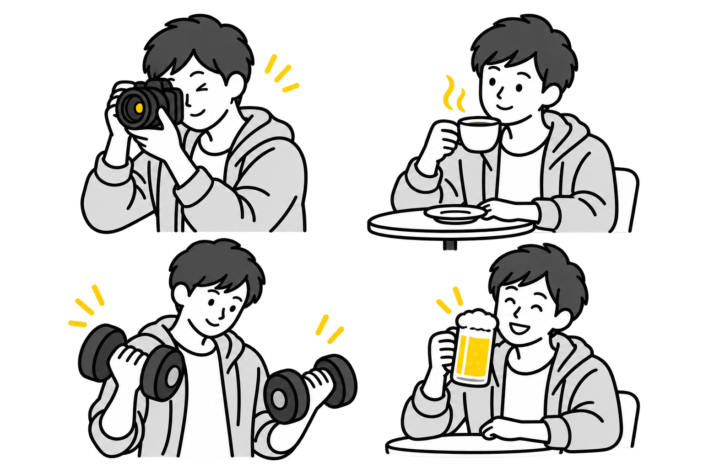
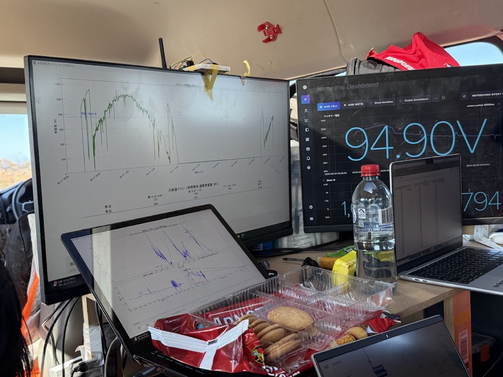

自己紹介
セミナーⅡ 2026年9月17日
01
平松 瑠希
ひらまつ るき
工学院大学 情報学部 情報科学科 3年 新潟県 新潟市 出身
名簿の「瑠希望」は、名前を書いたときに 「望」を消し忘れたものです。
望
×

基本プロフィール
新潟で生まれ、高校まで新潟で過ごしました。東京に来て3年目です。
02
出身地・高校
新潟県 新潟市 北越高校 普通科
得意科目・不得意科目
得意科目は、なし。 不得意科目は国語です。
部活・サークル
中高はサッカー部。 チームで県大会3位まで 行きました。
趣味
一人でやることが好きです。 筋トレ、AI、カフェ巡り、写真。 いま一番好きなのは、一人でお酒を飲むことです。
好きな人
親です。東京に出してもらい、 やりたいことを止められたことがないので。
家から出ないで働きたくて、漫画で 見たプログラマーならできそうだと 思い、情報学部を選びました。
高校の模試では 200点中19点でした。
大学ではソーラーチームの エネルギーマネジメント班です。
これまでの活動
サッカーからソーラーチームへ。大学2年の3月からインターンを始めました。
03
小4〜高3
サッカー部
チームで県大会3位まで 行きました。 自分の役割の中で、 どう勝つかを考えていました。
続けることと、 役割を果たすことを覚えました。
大学1・2年
ソーラーチーム
オーストラリアを3,000km走る 世界大会で、発電量と使う電力を 予測し、走り方を決めました。 チームは総合13位でした。
ここからAIを使い始めました。 分析用のシステムも AIで作っています。
大学2年3月〜いま
長期インターン
AIスタートアップで、 広告の配信とレポート、 LINE配信の企画などを 担当しています。
クライアントの仕事に 入るようになりました。
大学で取り組んでいること
04
ソーラーチームと長期インターンの、2つの活動に取り組んでいます。
ソーラーチーム
エネルギーマネジメントを担当
発電量・消費電力・バッテリー残量を予測 走る速度とタイミングを計画 レース中も天候や残量を見て計画を調整
オーストラリアの大会で使った観測画面
長期インターン（AI企業）
広告・LINE
広告の配信・レポート作成 LINE配信の企画
ECサイト
数字を確認するための分析設計
AI活用
企業向けに、AIの使い方をまとめた 研修資料を作成

大学生活で変わったこと
高校から大学へ、1・2年から3年へ。自分で考えて動く範囲が広がりました。
05
高校生のとき → 大学生のいま
高校まで
決められた枠の中で成果を出す
やることは決まっていて、 その中でどう勝つかを考えていました。
大学から
自分で選んで挑戦する
授業で習っていない内容にも、ソーラー チームやインターンで挑戦しました。
→
1・2年のとき → 3年のいま
1・2年
先輩に教わりながら担当する
エネマネや運営で、先輩に教わりながら 自分の担当分をこなしていました。
3年のいま
自分で計画し、結果を説明する
配信内容や判断する数字を自分で決め、 うまくいかなかった理由も説明します。
→
研究への関心と、これから
AIに任せる範囲をどう決めるか。インターンで毎回考える、この線引きに興味があります。
06
興味のある分野
人と機械のやりとりをデータで分析する分野、 機械学習・画像認識に興味があります。
卒論でやってみたいこと
人とAIのやりとりを記録して、 うまくいく条件を分析したいです。
進路
大学院への進学を考えています。 まずは進級と卒業ができるようにします。
大事にしていること
自分が楽しいと思うことをやること。
長期的には、自分の会社を 持ちたいです。